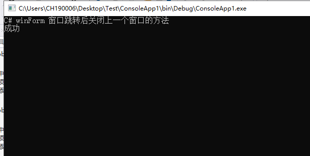

开发环境：Win10 + VS2019
Mysql服务器版本：8.0.16
一、下载并安装插件(必备)
MySQL-Connector-net-6.9.12 链接https://cdn.mysql.com//Downloads/Connector-Net/mysql-connector-net-6.9.12.msi
MySQL for Visual Studio 2.0.5 链接https://cdn.mysql.com//Downloads/MySQL-for-VisualStudio/mysql-for-visualstudio-2.0.5.msi
二、创建新的（控制台）项目
用Nuget方式安装MySql.Data.Entity-6.9.12，MySql.Data-6.9.12
注意！！！ 安装的2个dll版本号必须一致（否则各种坑秀的你头皮发麻）以及对应MySQL-Connector-net版本相同
三、添加 ADO.NET 实体数据模型 选择“MySQL DataBase”，填写信息
四、控制台测试运行
static void Main(string[] args)
{
using (var db = new Model1())
{
var ss = (from t in db.gjs where t.id==2
select t).First();
Console.WriteLine( ss.method,ss.text);
Console.WriteLine("成功");
Console.Read();
}
}运行图示：
